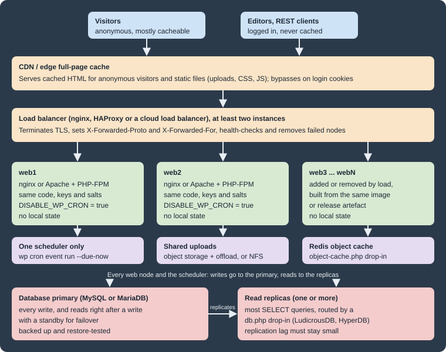

Scaling and High Availability
|
This content was generated with the assistance of AI and should be verified against the official documentation before being relied on in production. |
This page was written against WordPress 7.1.3 (released 2026-10-06; 7.1.4, a security release of 2026-10-28, is the
version to run in production), PHP 8.4, WP-CLI 2.12.0, MariaDB 11.8, nginx 1.29 and LudicrousDB 5.3.1, and checked on
2026-10-28. WordPress 7.2 is in beta and due in December 2026; nothing on
this page changes with it. Every example was run on a two-node cluster built from the official Docker images:
wordpress:7.1.3-php8.4-apache, wordpress:cli-2.12.0-php8.4, mariadb:11.8 and nginx:1.29.
Most WordPress sites never need more than one well-tuned server with a page cache. This page, for administrators and hosting engineers, starts where one server is no longer enough, or is a single point of failure the business cannot accept, as when a prize shortlist sends a spike of readers to the Lumen Press catalogue. It covers what must be shared, what must be identical, what must run only once, and what a proxy changes about the request. Caching layers are covered in Performance and Caching and scheduled events in WP-Cron and Scheduled Tasks; this page only places them in a multi-server design.
Vertical and horizontal scaling
There are two ways to add capacity. Vertical scaling gives the existing server more CPU, memory and faster disks. Horizontal scaling adds more servers and spreads the requests between them.
| Vertical (a bigger server) | Horizontal (more servers) | |
|---|---|---|
What changes in WordPress |
Nothing |
Shared uploads, identical keys and salts, one cron runner, proxy-aware HTTPS detection, a shared object cache |
Availability |
Still one point of failure |
A failed node is removed by the load balancer; the database must also be made redundant |
Ceiling |
The largest machine the host sells |
The database, which stays a single writer |
Cost of the first step |
Low: a plan upgrade and a restart |
Higher: a load balancer, shared storage, a deployment process |
When to choose it |
First, after caching. It is cheaper and simpler |
When one server cannot serve the uncached traffic, or downtime must survive a server failure |
The Advanced Administration Handbook gives the same order: caching and single-server tuning first, then the database
on its own server (a change of DB_HOST), then offloaded static files, and only then load balancers and several web
servers. An edge cache absorbs anonymous page views; horizontal scaling is for the uncached work that remains, such as
logged-in editors, comments, search, the REST API, admin-ajax.php and a shop’s cart and checkout.
A reference topology

The edge cache serves anonymous visitors and static files. The load balancer (two instances, or a managed one, so
that it is not the new single point of failure) terminates TLS, adds X-Forwarded-Proto and X-Forwarded-For, and
stops sending requests to failed nodes. The identical, stateless web nodes can each serve any request and be replaced
at any time. One scheduler runs cron events. The shared services are the uploads store, the object cache and the
database, with a primary for writes and optional read replicas.
The same topology as a managed cloud design, with the database on RDS or Aurora and the web nodes as pods on several EKS nodes, is in Cloud Reference Architecture.
Stateless web nodes
A node is stateless when nothing that matters is stored only on that node. By default, WordPress breaks that rule in several places:
| State | Where WordPress keeps it on one server | What a cluster needs |
|---|---|---|
Code: core, plugins, themes, |
The node’s file system |
The same release on every node, delivered by a deployment (an image, a package, |
Media uploads |
|
One shared store: a network file system mounted on every node, or object storage with an offload plugin |
Login cookies |
Signed with the keys and salts in |
The same eight keys and salts on every node |
Object cache (if persistent) |
A drop-in, |
One shared Redis or Memcached server, never a per-node cache such as APCu |
Page cache files (plugin-based) |
Usually |
A shared cache at the edge or in a reverse proxy, or accept a separate cache per node and purge each one |
Sessions: WordPress uses cookies, not PHP sessions
WordPress core does not call session_start(). A login is a set of signed cookies (wordpress_logged_in_*, and
wordpress_sec_* for the admin over HTTPS). Any node can validate them by recomputing the HMAC with the keys and
salts, and the user’s session tokens are stored in the session_tokens user meta in the database. This is why a
WordPress cluster does not need sticky sessions.
The keys and salts must be identical on every node for this to work. The official Docker image generates random
keys and salts for each container when it writes wp-config.php and no WORDPRESS_*_KEY or WORDPRESS_*_SALT
variables are set. Two containers started that way can each run WordPress, but a cookie issued by one is rejected by
the other, and users are sent back to the login screen whenever the load balancer switches node. The fix is to pass
the same eight values to every node from one secret store. The Lumen Press staging cluster below does that.
Site Health’s "No PHP sessions detected" test flags a plugin that leaves a PHP session open, because that blocks
loopback and REST API requests. A plugin that relies on $_SESSION also needs sticky sessions or a shared session
handler in a cluster; prefer plugins that keep such state in the database or in cookies.
Shared uploads
An image uploaded through one node is requested through every node, so all nodes must see the same
wp-content/uploads. A network file system (NFS or a managed file service) mounted there needs no WordPress
changes, but adds latency to every file operation and is a shared dependency that must itself be highly available.
Mount only uploads from it, never the PHP code. Object storage with an offload plugin (third-party ecosystem
software, working through core hooks such as the upload_dir filter) copies each upload to an S3-compatible bucket
and rewrites attachment URLs to the bucket or CDN. Check that it handles image sub-sizes, edits and deletions, and
keep local copies until every plugin that reads files from disk has been tested. Either way, back up the shared store
on its own; see Backups and Disaster Recovery.
HTTPS detection behind a load balancer
WordPress decides whether the current request is secure with is_ssl(). That function checks only the request as
PHP sees it: $_SERVER['HTTPS'] set to on or 1, or $_SERVER['SERVER_PORT'] equal to 443. When the load
balancer terminates TLS and forwards plain HTTP to the nodes, PHP sees an HTTP request on port 80, and is_ssl()
returns false even though the visitor used HTTPS.
The symptoms depend on the configuration. With FORCE_SSL_ADMIN set, wp-login.php and wp-admin redirect to the
HTTPS URL forever, because each redirected request still arrives at the node as HTTP. Without it, the site may build
some URLs with http:// and the browser blocks them as mixed content. Logins can also fail silently, because the
secure admin cookie is set only on requests that WordPress sees as HTTPS.
The Advanced Administration Handbook’s fix is to let wp-config.php trust the X-Forwarded-Proto header that the
proxy sets, and to copy it into $_SERVER['HTTPS'] before WordPress loads. The handbook snippet reads the header
without checking that it exists. Under PHP 8 that logs an "Undefined array key" warning on every request that does
not come through the proxy, such as WP-CLI or a health check on the node itself. The version below adds the check:
<?php
// wp-config.php, above the "That's all, stop editing!" line.
// The load balancer terminates TLS and forwards plain HTTP. Trust its header so
// that is_ssl() is true; the web nodes must not be reachable except through it.
if (
isset( $_SERVER['HTTP_X_FORWARDED_PROTO'] )
&& false !== strpos( $_SERVER['HTTP_X_FORWARDED_PROTO'], 'https' )
) {
$_SERVER['HTTPS'] = 'on';
}
define( 'FORCE_SSL_ADMIN', true );
// Same values on every node, loaded from the environment (never committed).
define( 'AUTH_KEY', getenv( 'WP_AUTH_KEY' ) );
// ... the other seven keys and salts in the same way ...
// Cron runs from one scheduler only (see the cron section).
define( 'DISABLE_WP_CRON', true );
// Code changes arrive by deployment to every node, never from the dashboard.
define( 'DISALLOW_FILE_MODS', true );The strpos() check also accepts a comma-separated list such as http,https, which some proxy chains send (checked
under PHP 8.4: no header and http leave HTTPS unset; https and http,https set it to on).
Two security rules come with this snippet. First, the header is only trustworthy if the load balancer replaces any
X-Forwarded-Proto that the client sent, as nginx’s proxy_set_header does. A proxy that appends to the client’s
value lets an attacker add https to the list. Second, the nodes must accept traffic only from the load balancer, by
firewall or private network, so that nobody can reach a node directly with a forged header. The official
wordpress Docker image already contains the same guarded check in the wp-config.php it generates, so containers
built from it need no extra code.
The visitor’s IP address has the same problem: $_SERVER['REMOTE_ADDR'], recorded for comments and used by
security plugins, is the load balancer’s address. Fix it in the web server with Apache’s mod_remoteip or nginx’s
realip module, which trust X-Forwarded-For only from the proxy’s address. Copying the header into REMOTE_ADDR
in wp-config.php without that check lets any client choose its own IP address.
The Lumen Press staging cluster
The following Compose file runs the topology at small scale: two WordPress nodes behind an nginx load balancer that
terminates TLS, one MariaDB server, one shared uploads volume, and a cron runner. Each node keeps its own copy of the
code in its own volume, as separate servers would. Only wp-content/uploads is shared.
name: lumen-ha
x-wordpress-env: &wordpress-env
WORDPRESS_DB_HOST: db
WORDPRESS_DB_NAME: lumen
WORDPRESS_DB_USER: lumen
WORDPRESS_DB_PASSWORD: ${DB_PASSWORD:?set DB_PASSWORD in .env}
# Identical keys and salts on every node, or a login cookie issued by one
# node is rejected by the other.
WORDPRESS_AUTH_KEY: ${WP_AUTH_KEY:?}
WORDPRESS_SECURE_AUTH_KEY: ${WP_SECURE_AUTH_KEY:?}
WORDPRESS_LOGGED_IN_KEY: ${WP_LOGGED_IN_KEY:?}
WORDPRESS_NONCE_KEY: ${WP_NONCE_KEY:?}
WORDPRESS_AUTH_SALT: ${WP_AUTH_SALT:?}
WORDPRESS_SECURE_AUTH_SALT: ${WP_SECURE_AUTH_SALT:?}
WORDPRESS_LOGGED_IN_SALT: ${WP_LOGGED_IN_SALT:?}
WORDPRESS_NONCE_SALT: ${WP_NONCE_SALT:?}
WORDPRESS_CONFIG_EXTRA: |
define( 'WP_HOME', 'https://lumenpress.test' );
define( 'WP_SITEURL', 'https://lumenpress.test' );
define( 'FORCE_SSL_ADMIN', true );
define( 'DISABLE_WP_CRON', true );
define( 'WP_ENVIRONMENT_TYPE', 'staging' );
services:
db:
image: mariadb:11.8
environment:
MARIADB_DATABASE: lumen
MARIADB_USER: lumen
MARIADB_PASSWORD: ${DB_PASSWORD:?}
MARIADB_RANDOM_ROOT_PASSWORD: "1"
volumes:
- db-data:/var/lib/mysql
healthcheck:
test: ["CMD", "healthcheck.sh", "--connect", "--innodb_initialized"]
interval: 5s
retries: 20
# A new named volume is owned by root; hand the shared uploads to www-data (33).
uploads-owner:
image: wordpress:cli-2.12.0-php8.4
user: "0:0"
entrypoint: ["chown", "33:33", "/uploads"]
volumes:
- uploads:/uploads
web1: &web
image: wordpress:7.1.3-php8.4-apache
hostname: web1
environment: *wordpress-env
volumes:
- web1-code:/var/www/html
- uploads:/var/www/html/wp-content/uploads
depends_on:
db:
condition: service_healthy
uploads-owner:
condition: service_completed_successfully
web2:
<<: *web
hostname: web2
volumes:
- web2-code:/var/www/html
- uploads:/var/www/html/wp-content/uploads
lb:
image: nginx:1.29
ports:
- "80:80"
- "443:443"
volumes:
- ./lb/default.conf:/etc/nginx/conf.d/default.conf:ro
- ./lb/certs:/etc/nginx/certs:ro
networks:
default:
aliases:
- lumenpress.test
depends_on:
- web1
- web2
cron:
image: wordpress:cli-2.12.0-php8.4
hostname: cron
user: "33:33"
environment: *wordpress-env
volumes:
- web1-code:/var/www/html
- uploads:/var/www/html/wp-content/uploads
entrypoint: ["/bin/sh", "-c"]
command:
- |
while true; do
wp cron event run --due-now --url=https://lumenpress.test || true
sleep 60
done
depends_on:
- web1
volumes:
db-data:
web1-code:
web2-code:
uploads:The .env file next to it holds DB_PASSWORD and the eight WP_*_KEY/WP_*_SALT values. Generate them once, for
example from https://api.wordpress.org/secret-key/1.1/salt/, store them in the team’s secret manager, and never
commit them. The user: "33:33" lines matter: the CLI image is based on Alpine, where www-data is user 82, while
the Apache image is based on Debian, where it is user 33. Without the override, files written by WP-CLI into the
shared volume would not be writable by the web nodes. The lumenpress.test network alias lets containers reach the
site through the load balancer by its public name.
The load balancer configuration, lb/default.conf:
upstream wordpress {
zone wordpress 64k;
# Docker's embedded DNS; re-resolve node names when containers are replaced.
resolver 127.0.0.11 valid=10s ipv6=off;
server web1:80 max_fails=3 fail_timeout=10s resolve;
server web2:80 max_fails=3 fail_timeout=10s resolve;
}
server {
listen 80;
server_name lumenpress.test;
return 301 https://$host$request_uri;
}
server {
listen 443 ssl;
http2 on;
server_name lumenpress.test;
ssl_certificate /etc/nginx/certs/lumenpress.test.crt;
ssl_certificate_key /etc/nginx/certs/lumenpress.test.key;
client_max_body_size 64m;
location / {
proxy_pass http://wordpress;
proxy_http_version 1.1;
proxy_set_header Host $host;
proxy_set_header X-Forwarded-For $proxy_add_x_forwarded_for;
proxy_set_header X-Forwarded-Proto $scheme;
proxy_set_header X-Real-IP $remote_addr;
proxy_set_header Connection "";
proxy_next_upstream error timeout http_502 http_503;
}
}Source: nginx: ngx_http_upstream_module
Round-robin is the default; least_conn; in the upstream block suits requests of uneven cost. Without a shared
zone, a resolver and the resolve parameter (open source since nginx 1.27.3), nginx resolves web1 and web2
once at start-up and misses the new IP address of a replaced container until it is reloaded. With the configuration
above, web2 was recreated and got its share of requests without a reload. Open source nginx detects failures
passively: after max_fails failed attempts a node is skipped for fail_timeout, and proxy_next_upstream retries
the request on the other node. Active health checks need HAProxy, nginx Plus or a cloud load balancer.
The certificate is a self-signed one for lumenpress.test (openssl req -x509 ...). That is why the curl checks
below use -k. Production uses a certificate from a public CA. Install the site once, through the cron container
because it has WP-CLI:
docker compose up -d
docker compose run --rm -T cron "wp core install --url=https://lumenpress.test \
--title='Lumen Press' --admin_user=admin --admin_password=\"$LUMEN_ADMIN_PASSWORD\" \
--admin_email=admin@lumenpress.test --skip-email"Source: WP-CLI Commands: wp core install
A node probe for staging
To see which node served a request, and where a cron event ran, Lumen Press adds a must-use plugin on staging only,
deployed to wp-content/mu-plugins/ on every node:
<?php
/**
* Plugin Name: Lumen Node Probe
* Description: Reports which web node served a request and where a cron event ran. Staging only.
* Version: 0.1.0
*/
// Name the node in every front-end and admin response (not on production).
add_action(
'send_headers',
static function () {
if ( 'production' !== wp_get_environment_type() ) {
header( 'X-Lumen-Node: ' . gethostname() );
}
}
);
// Record where the stock sync last ran, to prove that only one node runs cron.
add_action(
'lp_catalog_sync_stock',
static function () {
update_option(
'lumen_last_cron_node',
gethostname() . ' ' . gmdate( 'c' ),
false
);
},
1
);lp_catalog_sync_stock is the Lumen Catalog event that pulls stock levels from the distributor. Its scheduling code
is in WP-Cron and Scheduled Tasks.
Checking the cluster
The requests below were sent from inside the Compose network, through the load balancer, using the site’s public name. Twenty requests to the home page:
for i in $(seq 1 20); do
curl -sk -o /dev/null -D - https://lumenpress.test/ | grep -i x-lumen-node
done | sort | uniq -c 10 x-lumen-node: web1
10 x-lumen-node: web2Source: nginx: ngx_http_upstream_module
Short runs can repeat a node, because each new connection may land on a different nginx worker. With web2 stopped
(docker compose stop web2), six further requests all returned 200 from web1, with no error shown to the client.
HTTPS detection. A node reached directly over HTTP, without the header, redirects the login page to HTTPS
(FORCE_SSL_ADMIN). The same request with the header that the load balancer adds is served:
curl -s -o /dev/null -w '%{http_code} %{redirect_url}\n' \
-H 'Host: lumenpress.test' http://web2/wp-login.php
curl -s -o /dev/null -w '%{http_code} %{redirect_url}\n' \
-H 'Host: lumenpress.test' -H 'X-Forwarded-Proto: https' http://web2/wp-login.php302 https://lumenpress.test/wp-login.php
200Source: Code Reference: is_ssl()
Shared uploads. An image imported through WP-CLI, which runs against the code of web1, is served by web2:
docker compose exec -T cron wp media import /tmp/cover.png --title="Cover" \
--porcelain=url --url=https://lumenpress.test
docker compose exec -T web1 curl -s -o /dev/null -w '%{http_code} %{content_type}\n' \
-H 'Host: lumenpress.test' http://web2/wp-content/uploads/2026/10/cover.pnghttps://lumenpress.test/wp-content/uploads/2026/10/cover.png
200 image/pngSource: WP-CLI Commands: wp media import
One login, any node. After a login through the load balancer, the auth cookies were sent directly to each node. A third container started from the same image without the shared keys and salts got its own random values from the image’s entrypoint, and rejected the same cookies:
login 302 -> https://lumenpress.test/wp-admin/
web1 /wp-admin/ 200
web2 /wp-admin/ 200
web3 (own random salts) /wp-admin/ 302 https://lumenpress.test/wp-login.php?redirect_to=https%3A%2F%2Flumenpress.test%2Fwp-admin%2F&reauth=1Source: Code Reference: wp_salt()
Rotating the keys and salts (wp config shuffle-salts, or new values in the secret store) logs every user out. In a
cluster, change them on all nodes in the same deployment.
Cron on one node only
WP-Cron is triggered by page loads. On every request that finds a due event, WordPress sends a non-blocking loopback
request to wp-cron.php. In a cluster that means every node spawns cron, the loopback goes back through the load
balancer, and only the doing_cron transient prevents overlapping runs. It is also late on quiet sites, and it
spends capacity on the very requests a spike sends. The cluster design is:
-
define( 'DISABLE_WP_CRON', true );on every node. This only stops page loads from spawning cron. It does not stop scheduled events from running when something calls cron explicitly. -
Exactly one scheduler runs due events. That can be a system cron entry on one designated node, a separate container (the
cronservice above), a KubernetesCronJobwithconcurrencyPolicy: Forbid, or a managed scheduler.
# crontab of the www-data user on the one scheduler host
* * * * * cd /var/www/lumen && wp cron event run --due-now --quietWP-CLI’s wp cron event run calls each due event’s hook directly. It does not take the doing_cron lock that
wp-cron.php uses (checked in the WP-CLI 2.12.0 cron-command source), so two schedulers running at the same time
can run the same event twice. That is the reason for a single scheduler, not one per node. Requesting
https://lumenpress.test/wp-cron.php from an external scheduler is the alternative when WP-CLI is not available. That
path does take the lock, but it occupies a web worker for the length of the run.
On the staging cluster, an event scheduled for "now" was not run by three page loads, and within a minute the cron container ran it:
docker compose exec -T cron wp cron event schedule lp_catalog_sync_stock now --url=https://lumenpress.test
# ... wait for the next loop of the cron service ...
docker compose exec -T cron wp option get lumen_last_cron_node --url=https://lumenpress.testSuccess: Scheduled event with hook 'lp_catalog_sync_stock' for 2026-10-28 10:42:31 GMT.
cron 2026-10-28T10:43:20+00:00The scheduler is itself a single point of failure, but a soft one: if it stops, events run late rather than the site
going down. Monitor it, for example by alerting when wp cron event list --fields=hook,next_run_relative shows events
overdue by more than a few minutes. Long jobs, such as a full catalogue import with wp lumen import, belong in their
own scheduled command or a queue, not in a cron event that blocks the loop.
The database: replicas and failover
Standard WordPress opens one connection to one database server, which remains the scaling limit and the last single
point of failure once the web tier is redundant. The usual steps, in order: a dedicated database server sized for the
working set; a standby with automatic failover, which WordPress sees as one DB_HOST; and read replicas only when
reads, not writes, overload the primary. Standard $wpdb cannot use replicas, so that step needs a db.php drop-in
such as HyperDB or its maintained fork LudicrousDB (third-party ecosystem software). Replication lag is the main risk:
the request after a save may read a replica that has not caught up. Keep replicas close to the primary, monitor lag and
run reports and backups against a replica.
On AWS the managed service does the standby and the failover. The instance, parameter group, TLS from wp-config.php,
connection math against PHP-FPM, RDS Proxy, the LudicrousDB installation and db-config.php listing, and a failover
test are in Managed Database: RDS and Aurora.
Caching in a cluster
Caching does more for a cluster than any other measure; the details are in Performance and Caching. Two rules are specific to clusters:
-
Full-page cache at the edge, not on each node. A CDN, or a Varnish or nginx cache tier in front of the load balancer, serves anonymous visitors without touching a web node. It must bypass requests with
wordpress_logged_in_*,wp-postpass_*orcomment_author_*cookies, the admin, the login page and previews, and a purge must reach every edge location. A cache plugin on each node works too, but then every node has its own copy to purge. -
One shared persistent object cache. A per-node cache such as APCu gives each node its own view: a post saved through
web1stays stale onweb2, and a transient set on one node does not exist on the other. Use one Redis or Memcached service for all nodes (see Redis Reference), with a key prefix per site and environment.
OPcache stays per node. With opcache.validate_timestamps=0, reload PHP-FPM or Apache on each node as part of the
deployment.
Deployments across nodes
In a cluster, updates reach every node through a deployment, and database upgrades run exactly once:
-
Build a release (image or archive) with core, plugins and themes at pinned versions, tested on staging (see Updates and Auto-Updates).
-
Roll it out node by node, draining each node at the load balancer first.
-
Run
wp core update-dbonce, from the scheduler host, when all nodes have the new code. Then purge the edge cache.
Old and new code briefly share one database, so a plugin update that changes the schema needs a maintenance window.
On Kubernetes this is a rolling Deployment with readiness probes (see Kubernetes
and Kubernetes: Autoscaling).
Load testing
Measure capacity before a spike. A realistic test mixes cached anonymous page views with uncached work: search, logged-in browsing, comments, REST calls and, in a shop, cart actions. It yields three numbers: the uncached requests per second one node sustains (which sizes the web tier), the database load at that rate (which shows when replicas are needed), and the edge cache hit ratio. Test staging, or production by agreement with the host, from outside the cluster, and watch PHP-FPM’s queue, database connections and slow queries, and the object cache hit rate. Apache JMeter is documented in JMeter, including logged-in sessions and cookies and finding bottlenecks.
Traffic spikes
Lumen Press has predictable spikes (a prize announcement) and unpredictable ones (a viral review):
-
Before a known event: warm the edge cache for the linked pages, add nodes ahead of time (scaling takes minutes, a spike seconds), and freeze deployments.
-
Keep pages cacheable: a plugin that sets a cookie for every visitor, or sends
Cache-Control: no-cache, sends the whole spike to PHP. -
Protect expensive paths: rate-limit
wp-login.php,xmlrpc.phpand search at the edge; serve stale content when the origin is slow (stale-while-revalidate); keep slow work such as emails and stock syncs in cron or a queue. -
Autoscale with a ceiling: scale web nodes on CPU or PHP-FPM queue length, up to what the database connection limit can support.
Pitfalls
| Symptom | Cause and fix |
|---|---|
Users are logged out at random, or "Are you sure you want to do this?" on save |
Different keys and salts per node (nonces are signed with them too). Pass the same eight values to every node |
Endless redirect on |
TLS is terminated at the load balancer and |
Mixed-content warnings after moving behind a proxy |
Same cause. Also check that |
Images uploaded a minute ago return 404 on some requests |
|
A plugin installed from the dashboard works only on some requests |
It was installed on one node. Set |
Scheduled events run twice |
More than one scheduler, or WP-Cron still enabled on page loads. Set |
An edited post shows the old version on some requests |
A per-node object cache, or reads from a lagging replica. Use one shared Redis or Memcached; keep reads after writes on the primary |
All comments come from the same IP address |
|
Corrections to older books
Older books, including Pro WordPress, discuss load balancing, replication, Varnish and Redis tiers and load testing. The general structure still holds, but several details have changed:
-
The MySQL query cache, sometimes recommended for WordPress database servers, was removed in MySQL 8.0. MariaDB still has a query cache, but it is off by default and scales poorly under concurrent writes. A persistent object cache in Redis or Memcached is the current answer.
-
WordPress core has no built-in page cache and no built-in object cache persistence.
WP_CACHEonly loads theadvanced-cache.phpdrop-in that a caching plugin provides. -
HyperDB, the multi-database drop-in that older material names, has not been updated since 2022. LudicrousDB is the maintained fork.
-
Sticky sessions are not required by WordPress core, which uses signed cookies rather than PHP sessions. They hide configuration errors (different salts per node, unshared uploads) instead of fixing them.